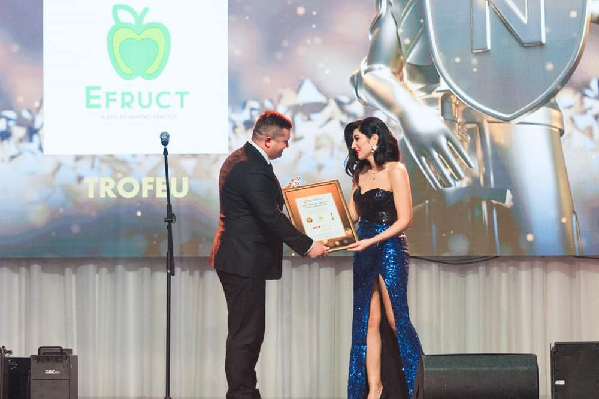
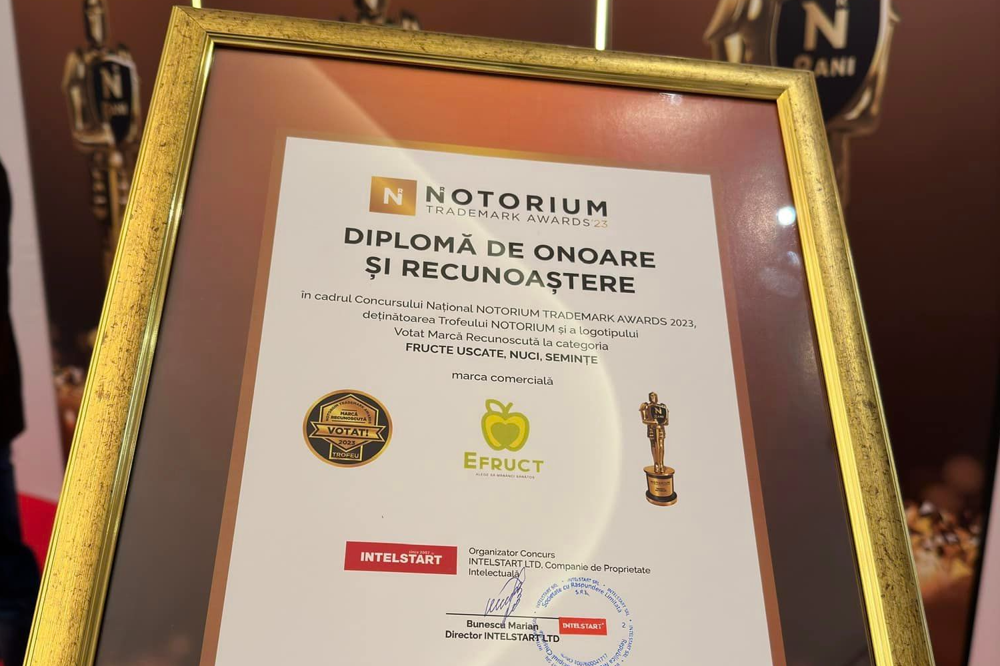
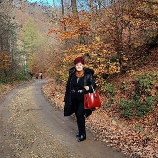
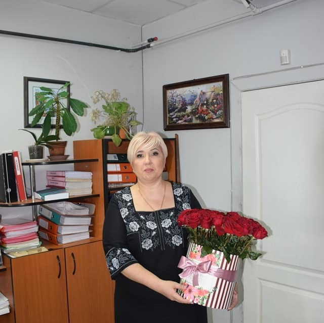

EFruct
FRUCTE USCATE 100% NATURALE
Despre noi
Intreprinderea noastră se specializează în producția și comercializarea de fructe uscate 100% naturale, fără adaosuri de zahăr, conservanți, coloranți sau aromatizatori.
✔Fabricate în Republica Moldova, produsele noastre sunt rezultatul unei atente selecții a celor mai proaspete și calitative fructe, care sunt apoi uscate în mod natural pentru a păstra aroma și nutrienții lor.
✔Ne dedicăm sănătății și bunăstării clienților noștri, oferindu-le produse autentice, sănătoase și delicioase, care să aducă o bucurie gustativă inegalabilă.


Calitate superioară

Autenticitate

Longevitate și experiență
Excelență în producție
Produsele noastre
Comandă online direct de la producător ⚜️EFruct Moldova⚜️ sau sună 060232777 ( viber, whatsapp)

Recenzii

Mariana Soiu
Ce bune sunt...Eu le folosesc în iaurt,prăjituri,în stare naturală,etc.Le recomand.
Svetlana Antocel
Buna! Va multumesc pentru fructele D- stre, cu adevarat sunt foarte gustoase si comanda a venit super rapid. O zi buna Va doresc si spor in toate!!!!!!

Natalia Plesca Dragancea
Foarte bunute toate produsele. Si cipsurile sunt foarte bune 🙂